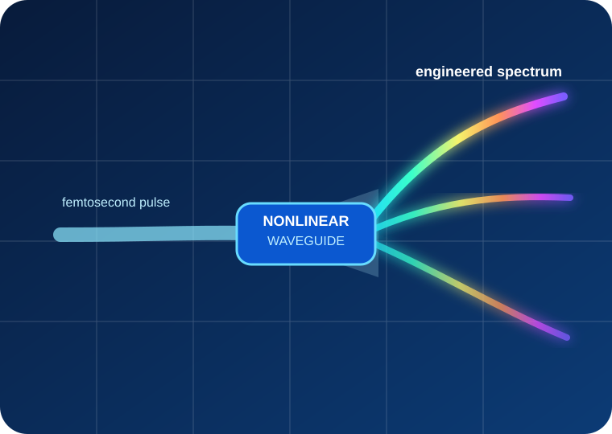
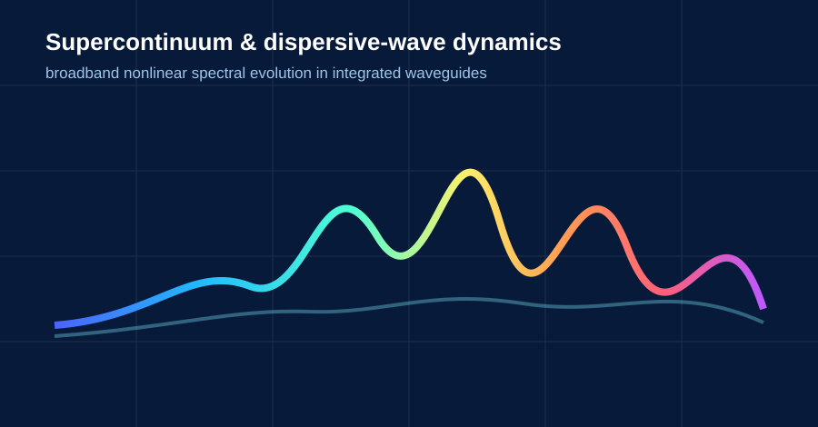
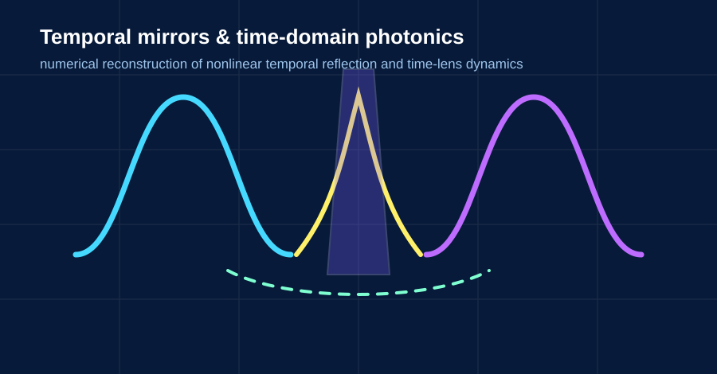
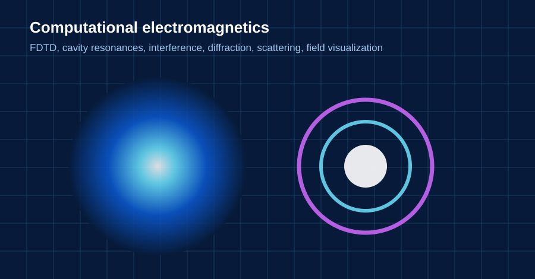
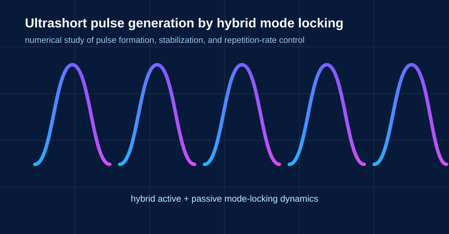
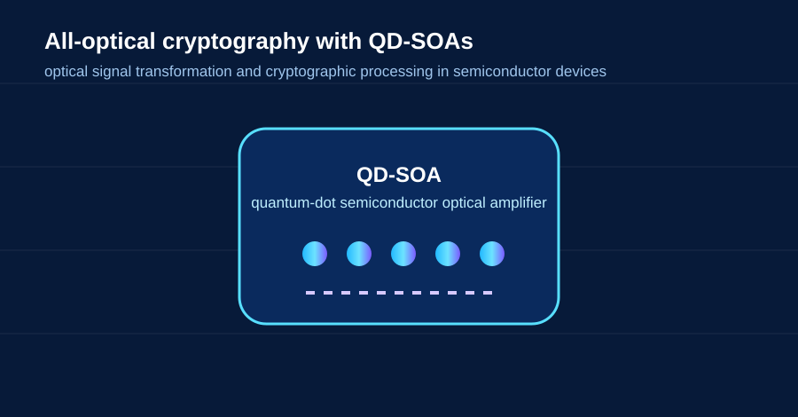

Nonlinear photonics
Supercontinuum generation, soliton dynamics, dispersive-wave emission, Raman response, self-steepening, and ultrashort-pulse propagation.
The Illinois College Computational Photonics Research Group
We use numerical physics to study how light evolves, interacts, broadens, reflects in time, and propagates through photonic structures. Our work connects nonlinear optics, ultrafast pulse dynamics, integrated photonics, and computational electromagnetics.

ComPhotZone focuses on computational approaches that let undergraduate researchers investigate modern photonics with open and reproducible numerical tools.
Supercontinuum generation, soliton dynamics, dispersive-wave emission, Raman response, self-steepening, and ultrashort-pulse propagation.
Accelerated temporal mirrors, time-lens concepts, and numerical reconstruction of unusual optical-wave dynamics in time.
FDTD solvers, resonant cavities, wave propagation, interference, diffraction, scattering, and magnetic-field simulation.

Femtosecond propagation, pump-controlled blue-side dispersive waves, and spectral engineering in a dispersion-engineered diamond waveguide.
Project details →
Reconstructing nonlinear temporal-mirror physics and exploring how optical pulses can experience reflection-like dynamics in time.
Project details →
Undergraduate projects on cavity resonances, wave phenomena, numerical accuracy, and field visualization.
Project details →ComPhotZone also includes computational projects on mode-locked pulse generation and semiconductor-optical-amplifier approaches to optical cryptography.

Computational study of mode-locked laser dynamics and the formation of stable ultrashort optical pulse trains using combined active and passive mechanisms.
Project details →
Computational exploration of quantum-dot semiconductor optical amplifiers for high-speed all-optical signal transformation and cryptographic processing.
Project details →Students work with simulation, validation, data analysis, visualization, literature review, and scientific communication — from the governing equations to a research poster or manuscript.